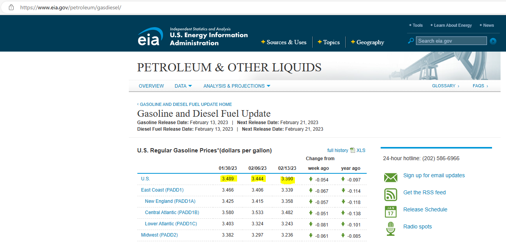

Welcome to Index Numbers
")
I greet you this day,
First: read the notes/eText.
Second: view the videos/multimedia resources.
Third: solve the questions/solved examples.
Fourth: check your solutions with my thoroughly-explained solutions.
Comments, ideas, areas of improvement, questions, and constructive criticisms are welcome.
Thank you for visiting.
Samuel Dominic Chukwuemeka (Samdom For Peace) B.Eng., A.A.T, M.Ed., M.S
Overview
Objectives
Students will:
(1.) Discuss index numbers.
(2.) Discuss the consumer price index.
(3.) Interpret the Consumer Price Index table from the Bureau of Labor Statistics.
(4.) Solve applied problems involving index numbers.
Index Numbers
(1.) Why is the cost of college so high when politicians spend millions of dollars attacking one
another with political ads?
Those dollars could be put to good use to fund education/tuition and fees for students.
Hey Dad, how much did it cost you to get your first degree?
Can you imagine what it costs now?
Compare: Average cost to get a four-year degree in 2023 than in 1993 (30 years ago).
Comparing the same quantity at different times.
(2.) As at:
01/30/23, the average price of a gallon of gas in the U.S was $3.489
02/06/23, the average price of a gallon of gas in the U.S was $3.444
02/13/23, the average price of a gallon of gas in the U.S was $3.390
Source: (Gasoline and Diesel Fuel
Update by U.S Energy Information Administration)

Compare: Average cost of a gallon of gasoline per week (Weekly average gas prices) in the U.S.
Comparing the same quantity at different times.
(3.) How much does a K12 Teacher make in the United States?
The average K12 Teacher salary in the United States is $58,547 as of January 26, 2023, but the salary range typically falls between $48,895 and $71,398.
(Source: K12 Teacher Salary in the United States https://www.salary.com/research/salary/posting/k12-teacher-salary by salary.com)
How does the salary vary by state?
Compare: K12 Teacher Salary by State in 2023
Comparing the same quantity at different places.
...among other comparisons.
An index number provides a simple way to compare measurements made at different times or in different places.
The value at one particular time or place is the reference value.
Some examples of index numbers are:
(a.) The amount of carbon in the atmosphere compared to pre-industrial levels
(b.) The value of a house in the City of Los Angeles compared to similar houses in the City of Boston
(c.) The intelligence of a given individual compared to the global average on an Intelligence Quotient (IQ) test
...among others.
It is important to understand an index number before deciding whether to trust it because an index number provides a simple way to compare measurements made at different times or in different places based on a reference value.
Understanding this value provides context to the index number which can help determine if it is trustworthy.
Let us discuss an application.
The table below gives the average prices of a gallon of gasoline between 1960 and 2010 at ten-year intervals.
Discuss the table and analyze the data.
| Year | Price |
Index Number (1970 = 100) |
Price as a Percentage of 1970 Price | Price as how many times as 1970 Price |
|---|---|---|---|---|
|
1960 1970 1980 1990 2000 2010 |
$0.31 $0.36 $1.22 $1.23 $1.56 $2.84 |
86.1 100.0 338.9 341.7 433.3 788.9 |
86.1% 100.0% 338.9% 341.7% 433.3% 788.9% |
0.861 1.000 3.389 3.417 4.333 7.889 |
Based on the Table:
Given: Column 1 (Year) and Column 2 (Price)
To Calculate: Column 3 (Index Number), Column 4 (Price as...), Column 5 (Price as...)
Because we are doing some comparison (comparing the prices of a gallon of gas over some period of time),
we must have a base/reference year.
Using the reference year, we can find how the price for that reference year (reference value) compares
with the prices of other years
We set that reference value (price during the reference year) to be 100.
This implies that the reference value (the price of a gallon of gas during the reference year) is
$0.36
(1.) The reference year is 1970
(2.) The reference value is $0.36
(3.) The index number for the reference value is always set to 100.
(4.) Unless specified otherwise, round index numbers to the nearest tenth.
(5.) Index Number (1970 = 100)
$
Formula:\;\; index\;\;number = \dfrac{value}{reference\;\;value} * 100 \\[5ex]
\underline{1960} \\[3ex]
index\;\;number = \dfrac{0.31}{0.36} * 100 = 86.11111111 \approx 86.1 \\[5ex]
\underline{1970} \\[3ex]
index\;\;number = \dfrac{0.36}{0.36} * 100 = 1 \\[5ex]
\underline{1980} \\[3ex]
index\;\;number = \dfrac{1.22}{0.36} * 100 = 338.8888889 \approx 338.9 \\[5ex]
\underline{1990} \\[3ex]
index\;\;number = \dfrac{1.23}{0.36} * 100 = 341.6666667 \approx 341.7 \\[5ex]
\underline{2000} \\[3ex]
index\;\;number = \dfrac{1.56}{0.36} * 100 = 433.3333333 \approx 433.3 \\[5ex]
\underline{2010} \\[3ex]
index\;\;number = \dfrac{2.84}{0.36} * 100 = 788.8888889 \approx 788.9 \\[5ex]
$
(6.) Price as a Percentage of 1970 Price
(a.) The price of a gallon of gas in 1960 is about 86.1% of the price of a gallon in 1970
(b.) The price of a gallon of gas in 1980 is about 338.9% of the price of a gallon in 1970
(c.) The price of a gallon of gas in 1990 is about 341.7% of the price of a gallon in 1970
(d.) The price of a gallon of gas in 2000 is about 433.3% of the price of a gallon in 1970
(e.) The price of a gallon of gas in 2010 is about 788.9% of the price of a gallon in 1970
(7.) Price as how many times as 1970 Price
(a.) The price of a gallon of gas in 1960 is about 0.861 times as much as the price of a gallon in 1970
because the ratio of the gas price index in 1960 to
the gas price index in 1970 is approximately equal to 0.861.
(b.) The price of a gallon of gas in 1980 is about 3.389 times as much as the price of a gallon in 1970
because the ratio of the gas price index in 1980 to
the gas price index in 1970 is approximately equal to 3.389.
(c.) The price of a gallon of gas in 1990 is about 3.417 times as much as the price of a gallon in 1970
because the ratio of the gas price index in 1990 to
the gas price index in 1970 is approximately equal to 3.417.
(d.) The price of a gallon of gas in 2000 is about 4.333 times as much as the price of a gallon in 1970
because the ratio of the gas price index in 2000 to
the gas price index in 1970 is approximately equal to 4.333.
(e.) The price of a gallon of gas in 2010 is about 7.889 times as much as the price of a gallon in 1970
because the ratio of the gas price index in 2010 to
the gas price index in 1970 is approximately equal to 7.889.
Consumer Price Index
The Consumer Price Index (CPI) is a type of index number that is a measure of the average change over
time in the prices paid by urban consumers for a market basket of consumer goods and services.
It is designed to provide a fair comparison of how prices change with time.
It is measured based on the prices over time of more than 60,000 goods, services, and housing costs.
It is a way of measuring the prices consumers pay for products. It allows one to see how prices have
changed with time, and therefore measures inflation.
The information is obtained from the Bureau of Labor Statistics (BLS), a United States government
agency.
Presently, the reference value for the CPI is an average of prices during the period 1982-1984.
Please focus on these two columns: Year and Annual avg. on Pages 3 – 5
When comparing prices in different years, inflation must be taken into account.
Given a price in dollars for year X say ($X), the equivalent price
in dollars for year Y say ($Y) is given by the formula:
$
price\;\;in\;\;\$_Y = price\;\;in\;\;\$_X * \dfrac{CPI_Y}{CPI_X} \\[5ex]
$
The rate of inflation from one year to the next is the relative change in the Consumer Price Index
multiplied by 100.
The relative change is the difference in the two CPI values (CPI value of final year − CPI value
of initial year) divided by the CPI value of initial year.
$
rate\;\;of\;\;inflation = \dfrac{CPI\;\;value\;\;of\;\;final\;\;year -
CPI\;\;value\;\;of\;\;initial\;\;year}{CPI\;\;value\;\;of\;\;initial\;\;year} * 100 \\[5ex]
$
Given: the price of a particular home in one town, say Town 1
To: Use the index to find the price of a comparable house in another town, say Town 2
The formula is:
$
price\;(Town\;2) = price\;(Town\;1) * \dfrac{index\;(Town\;2)}{index\;(Town\;1)} \\[5ex]
$
References
Chukwuemeka, S.D (2016, April 30). Samuel Chukwuemeka Tutorials - Math, Science, and Technology.
Retrieved from https://mathematicscourses.github.io/QuantitativeReasoning/
Bennett, J. O., & Briggs, W. L. (2019). Using and Understanding Mathematics: A Quantitative Reasoning
Approach. Pearson.
Bennett, J. O., & Briggs, W. L. (2023). Using and Understanding Mathematics: A Quantitative Reasoning
Approach. Pearson.
CrackACT. (n.d.). Retrieved from http://www.crackact.com/act-downloads/
(2022, April 20). Consumer Price Index [Review of Consumer Price Index]. Bureau of Labor Statistics.
Historical Consumer Price Index for All Urban Consumers (CPI-U): U.S. city average,
all items, index averages [1982-84=100, unless otherwise noted]
51 Real SAT PDFs and List of 89 Real ACTs (Free) : McElroy Tutoring. (n.d.).
Mcelroytutoring.com. Retrieved December 12, 2022,
from
https://mcelroytutoring.com/lower.php?url=44-official-sat-pdfs-and-82-official-act-pdf-practice-tests-free